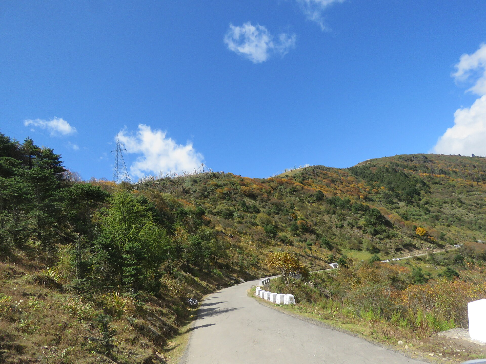
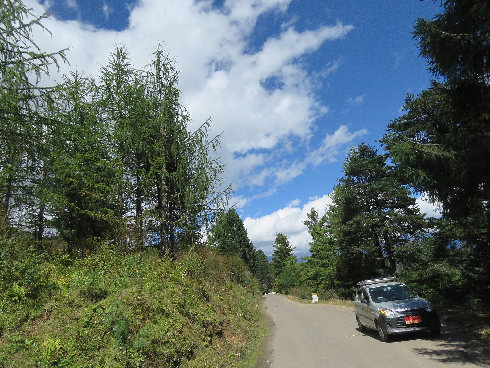
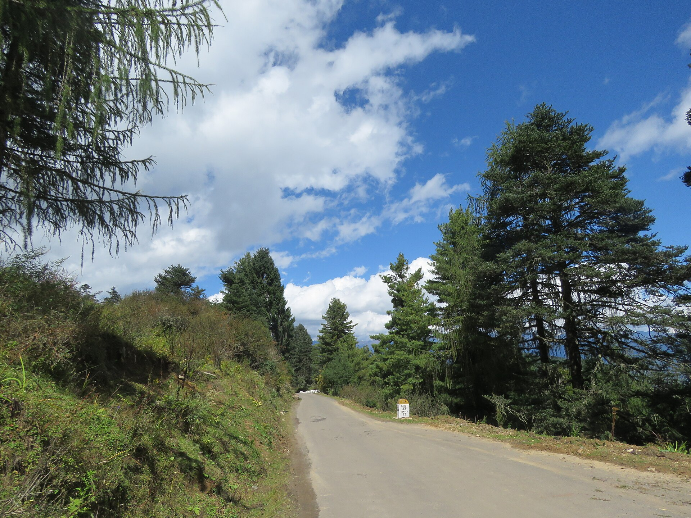
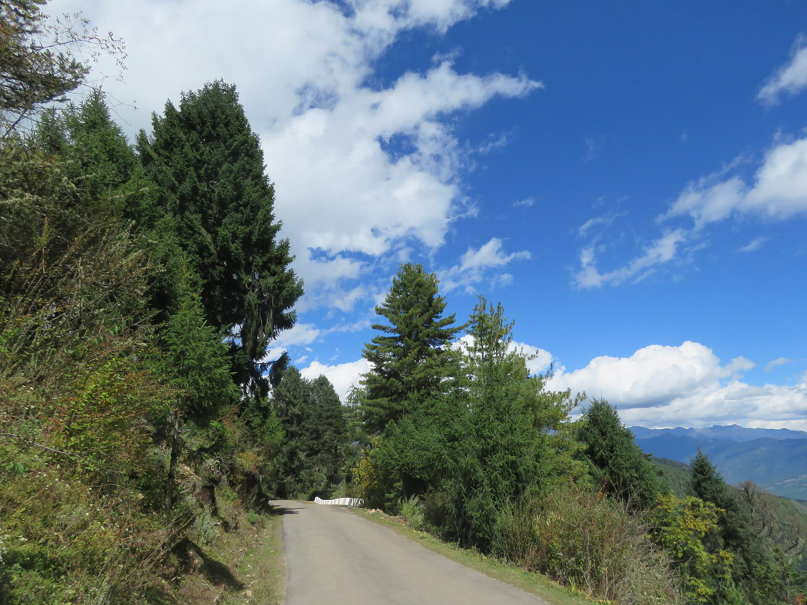
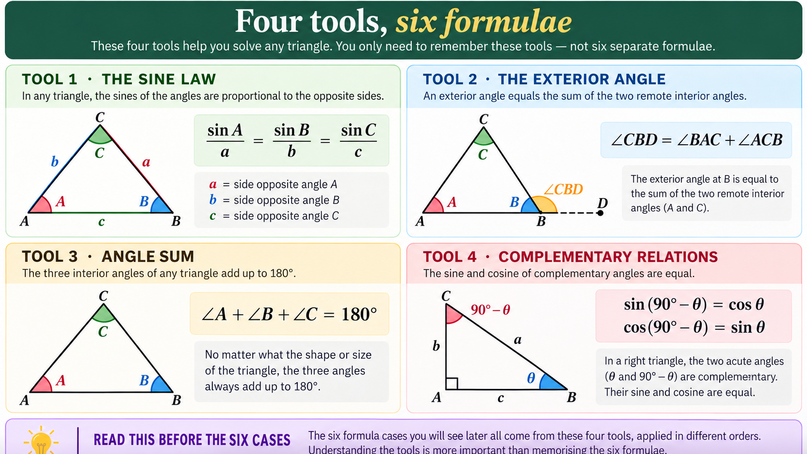
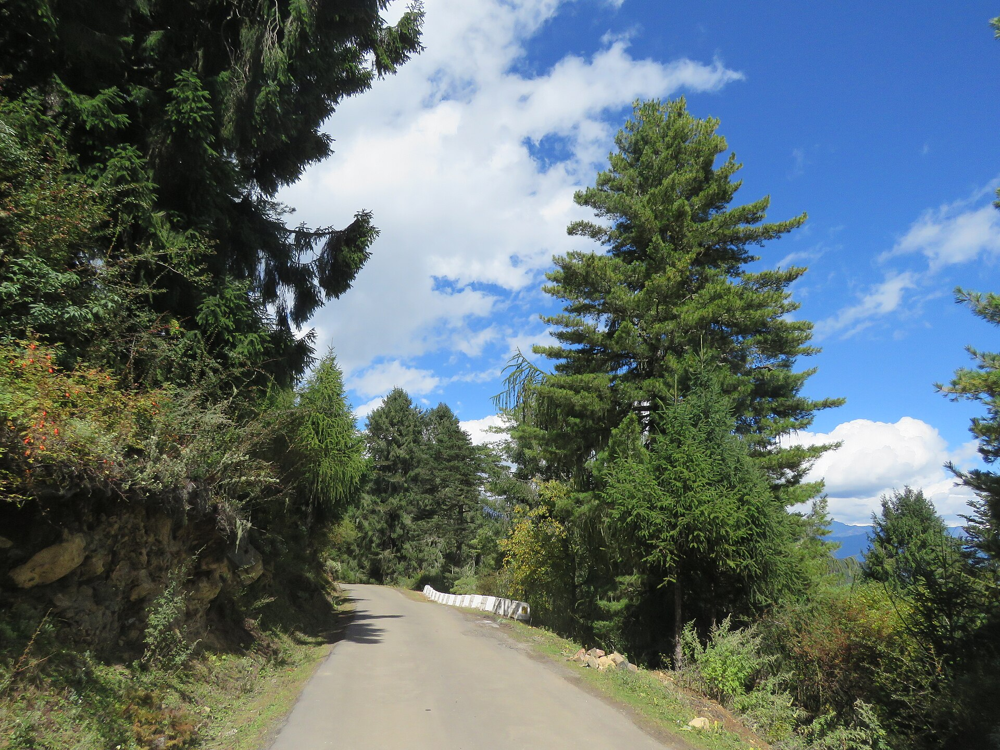

Measurement of
Tree Height
Definition and classification · Ocular and non-instrumental methods · The tangent method · Leaning trees and the sine method · DBH and height classes
Royal University of Bhutan
Forest Resources Planning and Management Division
Learning outcomes
Unit IV
Every outcome above is examinable. Outcomes 4–6 will be tested as calculations — full working must be shown, not only the final answer.
Why we measure the hardest dimension
Unit IV
Height is one of the three terms in V = g × h × f. No height, no volume — and an error in height passes into volume undiluted.
Every general volume table, form factor table and yield table is entered with DBH and height. Read the wrong row and the whole estimate is wrong.
Height at a reference age defines the site class. Height growth resists stand density far better than diameter growth, so it indexes the site itself.
Height increment separates a vigorous stand from a stagnating one long before diameter increment shows the difference.
Bole height decides how many logs of standard length a tree yields, and therefore what the tree is worth at the depot.
Allometric equations for biomass take DBH and height together — Bhutan has its own, for fourteen species. National carbon reporting inherits every height error made in the field.
Volume is linear in height. A 10 % error in the height of a tree is a 10 % error in its volume — there is no averaging, no cancellation, and no way to recover it later in the office.
How the unit is organised
Unit IV
height?
Definition, objectives, and the six heights that can be measured on one tree.
instruments
Ocular estimation, the shadow method and the single pole method — all similar triangles.
method
Clinometer, four ground situations, four formulae, and the errors each one hides.
trees
Why tangent fails, the sine law, and six cases that cover every observer position.
classes
Turning a column of measurements into a table a manager can actually read.

Vinayaraj · CC BY-SA 4.0.jpg){kind=link}
What Is Tree Height?
Definition and objectives · the six heights measured on one tree · choosing the height that answers the question being asked
Total height, defined precisely
Unit IV
The total height of a standing tree is the straight-line distance from the tip of the leading shoot — or from the highest point of the crown where there is no leader — to ground level.
- Straight-line, not stem length. A leaning tree is shorter than its own stem
- Highest point, not the nearest branch tip. In broadleaves this is a judgement, and judgement is a source of error
- Ground level, not stump top. On a slope, take the mean of the uphill and downhill ground at the base
On sloping ground two observers can differ by a metre simply because they disagree about where the ground is. Fix ground level before you raise the instrument.

Why height is recorded at all
Unit IV
Height is an essential parameter for calculating the volume of a standing tree. Basal area fixes the cross-section; height fixes how far that cross-section is carried up the stem.
Volume tables, form factor tables and yield tables are all entered with diameter and height. Without height, none of these published tables can be read.
Height is required to find the productive capacity of a site and so to decide its site class. Height growth reflects the site far more faithfully than diameter growth does.
Diameter responds to spacing and thinning. Height responds mainly to soil, moisture and climate — which is exactly why height, not diameter, indexes the site.
Three heights along the bole
Unit IV
The distance from ground level to the crown point — the first crown-forming branch, whether that branch is living or dead.
A morphological limit · decided by the tree, not by the market
The height of the bole that is usually fit for utilisation — it stops at the first fork, crook, heavy branch cluster or defect that ends usable timber.
An economic limit · two buyers may legitimately place it differently
The height of the bole from ground level up to the point where the average diameter over bark is 20 cm.
A defined limit · fixed by a number, so it is comparable between divisions and between years
The stump and the crown
Unit IV
The height of the stump left standing after felling. Every extra centimetre is butt-log volume — the most valuable wood in the tree — left behind in the coupe.
The distance from the tip of the tree down to the lowest green branches forming the crown. Measured downwards.
The distance from the ground up to the base of the live crown — the first green branches. Measured upwards. The module uses this name, not “crown height”.
Bole height stops at the first crown-forming branch living or dead. Crown-base height stops at the base of the live crown. On a tree that has kept its dead branches, bole height is the shorter of the two. The bare term “crown height” is not used in this module, because the literature gives it at least three different meanings — see Unit III.
One tree, six heights
Unit IV

Which height answers which question
Unit IV
| # | Height | Measured from → to | Who needs it, and what for | How it is taken |
|---|---|---|---|---|
| 1 | Total height | Ground level → tip of leading shoot | Mensurationist · volume equations, volume and yield tables, site class | Instrument, from a distance |
| 2 | Bole height | Ground level → crown point (first branch, living or dead) | Silviculturist · describes how much clean stem the tree has produced | Instrument, from a distance |
| 3 | Commercial bole height | Ground level → last point fit for utilisation | Buyer, sawmiller · how many logs of standard length the tree yields | Instrument + judgement of defect |
| 4 | Height of standard timber bole | Ground level → point where mean diameter over bark = 20 cm | Revenue and inventory · the one bole measure free of judgement | Instrument + diameter check |
| 5 | Stump height | Ground level → top of stump | Harvest supervisor · controls butt-log volume left in the coupe | Tape, after felling |
| 6 | Crown length | Tip → base of the live crown (lowest green branches) | Researcher · live-crown ratio, vigour, competition status | Instrument, target often hidden |
| 7 | Crown-base height | Ground level → base of the live crown (first green branches) | Researcher, fire officer · ladder-fuel gap to the canopy | Instrument, target often hidden |

Vinayaraj · CC BY-SA 4.0.jpg){kind=link}
Measuring Without Instruments
The taxonomy of methods · ocular estimation · similar triangles · the shadow method · the single pole method
Three families of method
Unit IV
Small trees need none of this — they are measured directly with a rod, a scale or a measuring tape. Every method above exists only because the tip of the tree is out of reach.
The ocular method
Unit IV
A height scale is fixed in the mind, and the observer judges the height of the tree against a pole of known length placed against it.
- Place a pole of 2–3 m upright against the base of the tree
- Sight past a pencil held at arm's length and step the pole length up the stem, counting the sections
- Height = number of sections × pole length
- Direct estimation uses no pole at all: the tree is divided into equal parts purely by eye
- Direct estimation needs an experienced, skilled observer and is not very reliable
Every experienced forester estimates ocularly before raising an instrument. The estimate is not a substitute for measurement — it is the check that catches a gross instrument blunder on the spot.

Similar triangles
Unit IV
Two triangles are said to be similar if their corresponding angles are equal and their corresponding sides are in the same ratio. So if ΔABC ~ ΔDEF, then:
∠A = ∠D · ∠B = ∠E · ∠C = ∠F
The triangles are similar only because the sun's rays are parallel and both the tree and the pole are vertical. Every method in this section assumes a vertical tree.
The shadow method
Unit IV
- Take a pole of convenient length and fix it upright on the ground
- Measure the pole, the pole's shadow and the tree's shadow — within the same few minutes, because the sun moves
- Apply the ratio above
The method is not possible without sunshine — so not under canopy, not in mist, not on an overcast day. And it is not easy on inconvenient terrain, because a shadow falling across broken or sloping ground is no longer the true base of the triangle.

Shadow method, step by step
Unit IV
QUESTION
A forester wants to estimate a tree's height on a sunny day, using only a pole and a tape.
- A pole of known length is fixed upright: 2.0 m.
- The pole's shadow, measured at once: 1.6 m.
- The tree's shadow, measured within the same few minutes: 14.4 m.
Calculate the height \(H\) of the tree using the shadow method.
CONCEPT
The tree and the pole both stand vertically in the same parallel sunlight, so they cast two similar right-angled triangles. Similar triangles have proportional sides, so height and shadow are in the same ratio for both objects.
FORMULA
Rearrange the proportion to solve for \(H\):
STEP-BY-STEP SOLUTION
Step 1 — Given
Step 2 — Multiply
Step 3 — Divide
SANITY CHECK
The height-to-shadow ratio must be the same for the pole and the tree, since both triangles are similar:
COMMON ERROR
Suppose the pole shadow was read five minutes late, as 1.7 m instead of 1.6 m: \(H = 28.8 \div 1.7 = 16.9\text{ m}\). A 6 cm error in the smallest measured quantity has moved the tree by 1.1 m. This is why the pole and tree shadows must be read within the same few minutes, and why a longer pole makes a centimetre matter less.
The single pole method
Unit IV
- Carry a stick of 1.5 m — or of arm's length — held vertically in one hand
- Stretch the arm out parallel to the ground
- Move backward or forward until the stick exactly covers the whole tree
Let AB be the tree and ac a pole of about 1.5 m, held at b vertically so that the distance from the observer's eye E to b equals Eb.
But the stick is held so that Eb = ab, and the ratio becomes one.
Single pole method, in the field
Unit IV
QUESTION
A forester wants to estimate a tree's height without any instrument, using only a stick and a tape.
- A stick is held vertically at arm's length; the length visible above the hand is 0.65 m.
- The reach, from eye to hand, is also 0.65 m — the stick is gripped at exactly the right point.
- The observer walks until the visible stick exactly covers the tree, top to bottom.
- The horizontal distance from the observer's eye to the tree base, taped along level ground, is 22.0 m.
Estimate the height of the tree.
CONCEPT
Triangles \(EAB\) (eye to tree) and \(Eab\) (eye to stick) share the same sight lines, so they are similar:
The stick is deliberately gripped so that the reach \(Eb\) equals the visible length \(ab\). When \(Eb=ab\), the ratio on the right becomes exactly 1.
FORMULA
Applying the grip condition \(Eb=ab\):
The tree is as tall as you are far from it — no arithmetic needed once the grip is right.
STEP-BY-STEP SOLUTION
Step 1 — Given
Step 2 — Check the condition
Step 3 — Read the tape
SANITY CHECK
The whole method stands or falls on one condition — confirm it before trusting the tape reading:
Only when this holds does the ratio collapse to 1 and the tape reading become the answer directly.
COMMON ERROR
(1) Gripping the stick too low, so the visible length no longer equals the reach, overestimates the tree. (2) An arm that is not truly horizontal tilts the whole triangle. (3) Taping \(EB\) along sloping ground gives slope distance, which is always longer than the horizontal distance the method needs. And once all three are satisfied, report 22 m, never 22.03 m — a false claim of precision that examiners and auditors both notice.
Non-instrumental methods compared
Unit IV
| # | Method | What you measure | Needs | Fails when | Typical accuracy |
|---|---|---|---|---|---|
| 1a | Ocular with a pole | Number of pole lengths up the stem | A 2–3 m pole, a pencil | The stem is hidden or the observer is inexperienced | ± 10–20 % |
| 1b | Direct ocular estimate | Nothing — the tree is divided by eye | An experienced, skilled observer | Always somewhat; the source calls it “not very reliable” | ± 20–30 % |
| 2a | Shadow method | Pole, pole shadow, tree shadow | Sunshine and even ground | No sun; broken or sloping ground under the shadow | ± 5 % on good ground |
| 2b | Single pole method | Horizontal distance from eye to tree base | A 1.5 m stick, a tape, a clear sight line | Slope distance is used instead of horizontal distance | ± 5–10 % |
Shadow method — the most accurate option here, and the cheapest.
Pole method — there is no shadow to measure, so the ratio must come from the hand.
Neither. Both assume a vertical tree on level ground — go to Sections C and D.

Vinayaraj · CC BY-SA 4.0.jpg){kind=link}
Instruments and the Tangent Method
Hypsometer, altimeter, clinometer · the trigonometry you need · four ground situations, four formulae · using a clinometer honestly
Three instruments, two principles
Unit IV
Measurement of height. Named for the job — Christen's and Smythies’ hypsometers read height directly off a graduated scale.
Measurement of altitude — height above sea level. Adapted for tree height by reading vertical angles, e.g. the Haga altimeter.
Measurement of the angle of slope. Not named for height at all — and yet it is the instrument used most in Bhutan.
The instrument builds a small triangle inside itself that is similar to the big triangle outside. Height is read straight off a scale, with no calculation.
The instrument measures an angle. You supply the distance and do the arithmetic. One device then serves any distance, any slope and any tree.
Any instrument that measures an angle of slope can measure height by trigonometry. The clinometer is cheap, rugged, needs no batteries, and the crew already carries one for slope correction — which is why it dominates teaching exercises and resource-limited field work. Bhutan’s Second National Forest Inventory used a Haglöf Laser Geo hypsometer. Name the setting before you name the instrument.
Which principle does your instrument use?
Unit IV
- A pole of known length must be placed against the tree, or a fixed distance kept from it
- No calculation and no calculator — the scale does the arithmetic
- Rigid: the instrument is built around one pole length or one distance
- Any measured distance will do — the instrument does not care how far you stand
- Requires arithmetic, and therefore requires care
- A smartphone inclinometer app belongs in this column too — and is only as good as the distance you feed it
Trigonometry, in one slide
Unit IV
Tri : three · Gonia : angle · Metron : measure
1/Sin = Cosec · 1/Cos = Sec · 1/Tan = Cot
Underline this. It is the step that makes every sine-method formula in Section D usable.
Check DEG, not RAD, before every calculation. A tangent taken in radians is not slightly wrong — it is meaningless, and it is the commonest cause of an absurd examination answer.
The tangent method
Unit IV
The tree is upright and your sight lines make a neat right-angled triangle. Take that away and the method fails — quietly.
One horizontal distance to the tree and one or two vertical angles. Nothing else.
The sine method needs no horizontal distance — only the distance along the line of sight. That is Section D.
Level ground, eye below the top
Sloping ground, eye between top and base
Eye below the tree base
Eye above the tree base
On level ground
Unit IV
Purpose
Find total tree height when the observer stands on flat, level ground — the base of the tree and the observer's feet are at the same elevation. Only one angle needs measuring.
Geometry and Notation
Let:
- \(A\) = observer's eye
- \(C\) = tree top
- \(B\) = the point on the trunk exactly at eye height (not the tree's physical base)
- \(AB\) = horizontal distance from observer to tree, exactly as labelled on the diagram
- \(h\) = observer's eye height above the ground
- \(\theta\) = angle of elevation from the horizontal to the tree top
- \(H\) = total tree height (the quantity we want) — not to be confused with \(AB\), the horizontal distance
The right angle sits at \(B\), where the horizontal sight line meets the vertical trunk. \(BC\) is the height of the tree above eye level; the tree's true base sits \(h\) below \(B\), directly beneath the observer's eye.
Step-by-Step Derivation
Step 1 — Identify the geometry
On level ground there is only one right triangle: \(ABC\), right-angled at \(B\). The adjacent side is the horizontal distance \(AB\); the opposite side is \(BC\), the height above eye level; the hypotenuse is the line of sight to the top. Total tree height splits into two pieces: the part above eye level (\(BC\)) and the part below it (\(h\)).
Step 2 — The part above eye level
Step 3 — The part below eye level
On level ground the tree's base sits at the observer's own foot elevation — directly \(h\) below eye height. No angle is needed for this part; it's a straight linear correction read off the observer's own height.
Step 4 — Combine the two parts
Final Formula
Applicable when the ground is level and the observer's feet are at the same elevation as the tree base. Measure \(AB\), \(\theta\), and the observer's own eye height \(h\).
Sloping ground — eye between top and base
Unit IV
Purpose
Find tree height when the observer stands on a slope at an elevation between the tree top and the tree base — the most common sloping-ground situation, where the horizontal line of sight cuts straight through the trunk.
Geometry and Notation
Let:
- \(A\) = tree top (above the observer)
- \(B\) = tree base (below the observer)
- \(E\) = observer's eye, on the slope, between the elevations of the top and base
- \(D\) = point where the horizontal line through \(E\) meets the trunk, between \(A\) and \(B\); \(ED\) is the horizontal distance, exactly as labelled on the diagram
- \(\alpha\) = angle of elevation to the tree top (above horizontal)
- \(\beta\) = angle of depression to the tree base (below horizontal)
The horizontal line \(ED\) cleanly splits the tree into an upper segment (\(AD\), above eye level) and a lower segment (\(DB\), below eye level) — the two right triangles \(EDA\) and \(EDB\) sit on opposite sides of the horizontal.
Step-by-Step Derivation
Step 1 — Identify the geometry
Two right triangles share the adjacent side \(ED\) and a right angle at \(D\): triangle \(EDA\) above the horizontal (angle \(\alpha\), elevation), and triangle \(EDB\) below it (angle \(\beta\), depression).
Step 2 — Height above eye level
Step 3 — Depth below eye level
Step 4 — Combine the two components
Final Formula
Applicable on sloping ground where the observer's eye level sits between the tree top and base, so the horizontal line of sight intersects the trunk. Measure the horizontal distance \(ED\), the elevation \(\alpha\) to the top, and the depression \(\beta\) to the base.
Eye below the base of the tree
Unit IV
Purpose
Find tree height when the observer stands downslope, below the tree base — so both the top and the base are above eye level, and both sighted angles are elevations.
Geometry and Notation
Let:
- \(A\) = tree top
- \(B\) = tree base
- \(E\) = observer's eye (downslope, below the base)
- \(D\) = horizontal projection of \(E\) onto the vertical line through the tree; \(ED\) is the horizontal distance, exactly as labelled on the diagram
- \(\alpha\) = angle of elevation to the tree top (the larger angle)
- \(\beta\) = angle of elevation to the tree base (the smaller angle)
Both \(A\) and \(B\) sit above the horizontal line \(ED\), so both angles are elevations, with \(\alpha > \beta\) since the top is farther above eye level than the base.
Step-by-Step Derivation
Step 1 — Identify the geometry
Two right triangles share the same adjacent side \(ED\) and a right angle at \(D\): triangle \(EDA\) (to the top, angle \(\alpha\)) and triangle \(EDB\) (to the base, angle \(\beta\)). Both lie on the same side of the horizontal — above it.
Step 2 — Height from eye to top
Step 3 — Height from eye to base
Step 4 — Combine the two components
Tree height is the gap between the two heights above eye level, not their sum:
Final Formula
Applicable when the observer is downslope, below the tree base — both angles are elevations. Measure the horizontal distance \(ED\), not the slope distance \(EB\).
Eye above the base of the tree
Unit IV
Purpose
Find tree height when the observer stands well upslope, above the entire tree — both the top and the base are below eye level, and both sighted angles are depressions.
Geometry and Notation
Let:
- \(A\) = tree top
- \(B\) = tree base
- \(E\) = observer's eye (upslope, above both top and base)
- \(D\) = horizontal projection of \(E\) onto the vertical line through the tree; \(ED\) is the horizontal distance, exactly as labelled on the diagram
- \(\alpha\) = angle of depression to the tree top (the smaller angle)
- \(\beta\) = angle of depression to the tree base (the larger angle)
Both \(A\) and \(B\) sit below the horizontal line \(ED\), so both angles are depressions, with \(\beta > \alpha\) since the base is farther below eye level than the top.
Step-by-Step Derivation
Step 1 — Identify the geometry
Two right triangles share the same adjacent side \(ED\) and a right angle at \(D\): triangle \(EDA\) (to the top, angle \(\alpha\)) and triangle \(EDB\) (to the base, angle \(\beta\)). Both lie on the same side of the horizontal — below it.
Step 2 — Drop from eye to top
Step 3 — Drop from eye to base
Step 4 — Combine the two components
Tree height is the gap between the two drops below eye level, not their sum:
Final Formula
Applicable when the observer is upslope, above both the tree top and base — both angles are depressions. Measure the horizontal distance \(ED\), not the slope distance \(EB\). This is the road-and-hillside case — the commonest in Bhutan.
Four situations, four formulae
Unit IV
| Case | What you see | Angles you read | Formula | Eye height? |
|---|---|---|---|---|
| a | Level ground, tip above the eye, base at your feet | One elevation, θ | H = AB · tan θ + eye height | Yes — add it |
| b | Slope, horizontal line passes through the tree | Elevation α to top Depression β to base | AB = EB cos β (tan α + tan β) | No — already included |
| c | Eye below the base — whole tree above the horizontal | Elevation α to top Elevation β to base | AB = EB cos β (tan α − tan β) | No — already included |
| d | Eye above the base — whole tree below the horizontal | Depression α to top Depression β to base | AB = EB cos β (tan β − tan α) | No — already included |
Horizontal line through the tree → tangents add. Horizontal line entirely above or below the tree → tangents subtract, larger angle first.
Adding eye height in cases b, c or d. The depression angle to the base already measures the drop from your eye to the base — adding 1.5 m again double-counts it.
Tangent method on level ground
Unit IV
QUESTION
A forester stands on level ground at a horizontal distance from the base of a tree and sights the tip through a clinometer.
- The horizontal distance to the tree is 20.0 m.
- The angle of elevation to the tip is θ = 38°.
- The observer's eye is 1.5 m above the ground.
Calculate the total height \(H\) of the tree.
CONCEPT
On level ground the observer's eye sits directly above the base line, so the tree splits into two parts:
- Height above eye level — found by the tangent ratio
- Height below eye level — this is simply the eye height, already known, no trigonometry needed
FORMULA
1 · Height above eye level
2 · Add the eye height
STEP-BY-STEP SOLUTION
Step 1 — Given
Step 2 — The ratio
Step 3 — Height above eye
Step 4 — Add the eye height
SANITY CHECK
The 15.63 m from Step 3 is only the part of the tree above eye level — check that it still needs the eye height added before it can be called the tree's height:
COMMON ERROR
Writing down 15.63 m as the final answer is the single most common mistake in this method — it is only the height above the observer's eye, never the height of the tree. The eye height is small but is always in the same direction, so it never averages out over many trees.
Tangent method on sloping ground
Unit IV
QUESTION
A forester measures the height of a tree on sloping ground.
- The slope distance from the observer to the tree base is 18.0 m.
- The angle of elevation to the tree top is 34°.
- The angle of depression to the tree base is 12°.
Calculate the total height of the tree using the tangent method.
CONCEPT
In this case, the observer's eye is between the tree top and the tree base. Therefore the tree height consists of two parts:
- Height above eye
- Height below eye
Total tree height = upper section + lower section
FORMULA
Three short rules, applied in order. \(EB\) = slope distance, \(\alpha\) = elevation to the top, \(\beta\) = depression to the base.
1 · Slope distance → horizontal distance
2 · Part above eye level
3 · Part below eye level
4 · Add the two parts
Written as one line, this is the standard sloping-ground formula:
STEP-BY-STEP SOLUTION
Now put the numbers from the question into the formula above.
Step 1 — Given
Step 2 — Horizontal distance
Step 3 — Upper and lower parts
Above eye level:
Below eye level:
Step 4 — Add them together
SANITY CHECK
The answer must equal the sum of the two visible parts of the tree.
COMMON ERROR
It is tempting to put the slope distance \(EB\) straight into \(\tan\alpha + \tan\beta\). Don't — the tangent rules only work with a horizontal distance. Always convert first: \(ED = EB\cos\beta\).
Using a clinometer honestly
Unit IV
Reads the angle directly. Feeds every formula in this unit. Use it whenever you are going to calculate.
Reads 100 × tan θ. Height above eye = D × reading ÷ 100. At D = 20 m that is simply the reading divided by five — which is why crews pace out 20 m.
Both eyes open. One reads the scale, the other watches the tree, so the hairline lies on the target.
Read, lower the instrument, read again. Agreement within 0.5° means average them; disagreement means you sighted two different branches.
Must be horizontal. Measure slope distance and multiply by cos β, or pace — but calibrate your pace on level ground first.
Sight the true tip, not the nearest branch. In broadleaves, walk around the tree before deciding which point is highest.
A clinometer reports angles faithfully and has no idea whether the tree is vertical. It will let you compute a badly wrong height with complete confidence — which is the whole subject of Section D.
Six ways to get the wrong height
Unit IV
| # | Mistake | Typical size of the error | How to prevent it |
|---|---|---|---|
| 1 | Eye height forgotten (case a) | 1.5 m — 15 % on a 10 m tree, and always in the same direction | Name the intermediate value “height above eye” out loud before adding |
| 2 | Slope distance used as horizontal | +6 % at 20° slope · +15 % at 30° | Always multiply by cos β, or use a rangefinder with slope correction |
| 3 | Wrong tip sighted | Several metres in a spreading broadleaf crown | Walk around the tree and decide which point is genuinely highest |
| 4 | Tree is leaning | Overestimate if it leans towards you, underestimate if away | Recognise the lean and switch to the sine method — Section D |
| 5 | Per cent scale read as degrees | A 60 % reading read as 60° turns an 11 m tree into 35 m | Check which scale you are on before the first tree of the day |
| 6 | Standing too close | At steep angles a 0.5° error becomes large, and the tip is hidden anyway | Stand at roughly one tree-height from the stem |
An examiner — or an auditor — can detect every one of these six mistakes from shown working, and none of them from a bare final answer.

Vinayaraj · CC BY-SA 4.0.jpg){kind=link}
Leaning Trees and the Sine Method
Why the tangent method fails · the sine law · six observer positions, six formulae · the seven sources of error
Instruments assume a tree is vertical
Unit IV
Instruments assume that the tree is vertical, but forests are seldom vertical. Treating a leaning tree as an upright one causes serious error in height measurement.
The imaginary vertical tree through the tip is taller than the real stem.
The imaginary vertical tree through the tip is shorter than the real stem.
A 10° lean on a 20 m tree moves the answer by roughly 2 m — about 10 %, larger than every instrument error in this unit combined. A practical rule: beyond about 5° of lean, switch to the sine method.
Four tools, six formulae
Unit IV

The sine law on a leaning stem
Unit IV
| AB | the leaning tree — A is the tip, B is the base |
| E | the observer's eye |
| BC | imaginary line from the base, meeting sight line EA at C |
| ED | imaginary horizontal from E, meeting BC at D |
| α, β | angles of elevation and depression, from the clinometer |
| θ | the angle of lean of the tree |
EB is a slope distance, read straight along the line of sight. The sine method never needs the horizontal distance — its whole advantage on steep ground.
Observer between base and top
Unit IV
Purpose
This derivation explains the angle at the tree base \(B\) for the case where the tree leans toward the observer and the observer's eye lies between the tree base and top.
Geometry and Notation
Let:
- \(A\) = tree tip
- \(B\) = tree base
- \(E\) = observer's eye
- \(AB\) = true stem length
- \(BE\) = slope distance / line of sight from the tree base to the observer
- \(\beta\) = angle of depression from the observer to the tree base
- \(\theta\) = angle of stem lean from the vertical
- \(BC\) = vertical reference line through the tree base
- \(BH\) = auxiliary horizontal line through \(B\), drawn parallel to \(ED\)
Because \(BC\) is vertical and \(BH\) is horizontal,
Step-by-Step Derivation
Step 1 — Identify the three parts of the 90° angle
At point \(B\), the angle from the vertical line \(BC\) to the horizontal line \(BH\) is \(90^\circ\). That \(90^\circ\) angle is divided into three smaller angles:
- \(\theta\): between the vertical \(BC\) and the leaning stem \(BA\)
- \(\angle ABE\): between the stem \(BA\) and the line \(BE\)
- \(\beta\): between the line \(BE\) and the horizontal \(BH\)
See the zoomed panel alongside for a worked check of this split with θ = 10°, β = 15°.
Step 2 — Rearrange for \(\angle ABE\)
Subtract \(\theta\) and \(\beta\) from both sides:
Why \(\beta\) appears at \(B\)
The auxiliary line \(BH\) is drawn parallel to \(ED\):
The line \(BE\) crosses both horizontal lines, so it makes the same acute angle with each horizontal. Therefore, the angle between \(BE\) and \(BH\) at \(B\) is also \(\beta\).
Angle Explanation
Sine-Law Calculation
The sine law for triangle \(AEB\):
Substitute the angles:
Using \(\sin(90^\circ - x) = \cos x\) with \(x = \alpha - \theta\):
Final Formula
Applicable when the observer is between the base and top and the tree leans toward the observer.
Observer below base and top
Unit IV
Purpose
This derivation gives the actual stem length \(AB\) when the observer is below both the tree base and tree top, both sight lines are elevation lines, and the tree leans toward the observer by angle \(\theta\) from the vertical.
Geometry and Notation
- \(A\) = top of tree
- \(B\) = base of tree
- \(E\) = observer
- \(AB\) = actual tree length
- \(EB\) = measured slope distance from observer to tree base
- \(\alpha\) = elevation angle from \(E\) to top \(A\)
- \(\beta\) = elevation angle from \(E\) to base \(B\)
- \(\theta\) = lean angle of the tree from the vertical
The observer is below both \(A\) and \(B\), so both sight lines \(EA\) and \(EB\) are above the horizontal.
Step-by-Step Derivation
Step 1 — Observer angle \(\angle AEB\)
From \(E\): \(EA\) makes angle \(\alpha\) with the horizontal; \(EB\) makes angle \(\beta\) with the horizontal. The angle between the sight lines is the difference:
Step 2 — Read the labeled interior angles
Because the horizontal and vertical construction lines are perpendicular, the angle marked at \(C\) is:
Step 3 — Account for tree lean toward observer
In triangle \(ABC\), \(\angle EAB\) is an exterior angle, so it equals the two opposite interior angles:
Step 4 — Apply the sine rule
Step 5 — Complementary-angle identity
Using \(\sin(90^\circ - x) = \cos x\) with \(x = \alpha - \theta\):
Angle Explanation
Sine-Law Calculation
Substituting the identity into the sine rule:
Final Formula
Applicable when the observer is below both the base and top and the tree leans toward the observer.
Observer above base and top
Unit IV
Purpose
This derivation gives the actual stem length \(AB\) when the observer is above both the tree top and the tree base, both sight lines are depression lines, and the tree leans toward the observer by \(\theta\) from the vertical.
Geometry and Notation
- \(A\) = tree top
- \(B\) = tree base
- \(E\) = observer's eye
- \(AB\) = actual stem length
- \(EB\) = measured slope distance from observer to tree base
- \(\alpha\) = angle of depression from \(E\) to the tree top \(A\)
- \(\beta\) = angle of depression from \(E\) to the tree base \(B\)
- \(\theta\) = angle of stem lean from the vertical
Because the observer is above both \(A\) and \(B\), both \(EA\) and \(EB\) lie below the horizontal through \(E\). Normally \(\beta > \alpha\).
Step-by-Step Derivation
Step 1 — Observer angle \(\angle AEB\)
Both sight lines lie below the horizontal. \(EA\) is depressed by \(\alpha\); \(EB\) is depressed by \(\beta\). The angle between them is the difference:
Step 2 — Convert the marked acute angle to the required exterior angle
The diagram marks \(\angle ACD=90^\circ-\alpha\). Since \(CD\) and \(CB\) are opposite rays, \(\angle ACD\) and \(\angle ACB\) form a straight line and are supplementary:
Step 3 — Account for lean toward observer
In triangle \(ABC\), \(\angle EAB\) is an exterior angle, so it equals the two opposite interior angles. Here \(\angle ABC=\theta\):
Step 4 — Apply sine rule
In triangle \(AEB\), side \(AB\) is opposite \(\angle AEB\), and side \(EB\) is opposite \(\angle EAB\). Therefore:
Now substitute \(\angle AEB=\beta-\alpha\) and \(\angle EAB=90^\circ+\alpha+\theta\):
Step 5 — Trigonometric simplification
Use \(\sin(90^\circ + x) = \cos x\) with \(x = \alpha + \theta\):
Angle Explanation
Sine-Law Calculation
Final Formula
Applicable when the observer is above both the base and top and the tree leans toward the observer.
Observer between base and top
Unit IV
Purpose
This derivation gives the actual stem length \(AB\) when the observer's eye is between the elevation of the tree base and tree top, the sight line to the top is an elevation angle, the sight line to the base is a depression angle, and the tree leans away from the observer by \(\theta\) from the vertical.
Geometry and Notation
- \(A\) = tree top
- \(B\) = tree base
- \(E\) = observer's eye
- \(AB\) = actual stem length
- \(EB\) = measured slope distance
- \(\alpha\) = elevation angle from \(E\) to top \(A\)
- \(\beta\) = depression angle from \(E\) to base \(B\)
- \(\theta\) = lean angle from vertical
Step-by-Step Derivation
Step 1 — Observer angle \(\angle AEB\)
The top sight line \(EA\) lies \(\alpha\) above the horizontal; the base sight line \(EB\) lies \(\beta\) below the horizontal. The full interior angle between the two sight lines is the sum (horizontal lies between them):
Step 2 — Find the exterior angle at \(C\)
The sight line \(EA\), and therefore the collinear line \(EC\), makes angle \(\alpha\) with the horizontal. Because \(CB\) is vertical, the angle between \(EC\) and \(CB\) is complementary to \(\alpha\):
Step 3 — Use the exterior-angle theorem
In triangle \(CAB\), \(\angle ECB\) is an exterior angle. It equals the sum of the two opposite interior angles:
Because \(E,A,C\) are collinear, rays \(AE\) and \(AC\) coincide, so \(\angle CAB=\angle EAB\). The angle between the vertical \(BC\) and the away-leaning stem \(BA\) is \(\angle CBA=\theta\). Substituting these relationships gives:
Subtract \(\theta\) from both sides:
Step 4 — Apply sine rule
In triangle \(AEB\), side \(AB\) is opposite \(\angle AEB\), and side \(EB\) is opposite \(\angle EAB\). Therefore:
Now substitute \(\angle AEB=\alpha+\beta\) and \(\angle EAB=90^\circ-(\alpha+\theta)\):
Step 5 — Complementary identity
Using \(\sin(90^\circ - x) = \cos x\) with \(x = \alpha + \theta\):
Angle Explanation
Sine-Law Calculation
Final Formula
Applicable when the observer is between the base and top and the tree leans away from the observer.
Observer below base and top
Unit IV
Purpose
This derivation gives the actual stem length \(AB\) when the observer is below both the tree base and tree top, both sight lines are elevation lines, and the tree leans away from the observer by \(\theta\) from the vertical.
Geometry and Notation
- \(A\) = tree top
- \(B\) = tree base
- \(E\) = observer
- \(AB\) = actual stem length
- \(EB\) = measured slope distance
- \(\alpha\) = elevation angle to top \(A\)
- \(\beta\) = elevation angle to base \(B\)
- \(\theta\) = lean angle from vertical
Because the observer is below both \(A\) and \(B\), \(\alpha > \beta\).
Step-by-Step Derivation
Step 1 — Observer angle \(\angle AEB\)
Both sight lines are above the horizontal. \(EA\) makes angle \(\alpha\); \(EB\) makes angle \(\beta\). The angle between them is the difference:
Step 2 — Find the exterior angle at \(C\)
The sight line \(EA\), and therefore the collinear line \(EC\), makes angle \(\alpha\) with the horizontal. Because \(CB\) is vertical, the angle between \(EC\) and \(CB\) is complementary to \(\alpha\):
Step 3 — Use the exterior-angle theorem
In triangle \(CAB\), \(\angle ECB\) is an exterior angle. It equals the sum of the two opposite interior angles:
Because \(E,A,C\) are collinear, rays \(AE\) and \(AC\) coincide, so \(\angle CAB=\angle EAB\). The angle between the vertical \(BC\) and the away-leaning stem \(BA\) is \(\angle CBA=\theta\). Substituting these relationships gives:
Subtract \(\theta\) from both sides:
Step 4 — Apply sine rule
In triangle \(AEB\), side \(AB\) is opposite \(\angle AEB\), and side \(EB\) is opposite \(\angle EAB\). Therefore:
Now substitute \(\angle AEB=\alpha-\beta\) and \(\angle EAB=90^\circ-(\alpha+\theta)\):
Step 5 — Complementary identity
Using \(\sin(90^\circ - x) = \cos x\):
Angle Explanation
Sine-Law Calculation
Final Formula
Applicable when the observer is below both the base and top and the tree leans away from the observer.
Observer above base and top
Unit IV
Purpose
This derivation gives the actual stem length \(AB\) when the observer is above both the tree top and the tree base, both sight lines are depression lines, and the tree leans away from the observer by \(\theta\) from the vertical.
Geometry and Notation
- \(A\) = tree top
- \(B\) = tree base
- \(E\) = observer's eye
- \(AB\) = actual stem length
- \(EB\) = measured slope distance
- \(\alpha\) = depression angle to top \(A\)
- \(\beta\) = depression angle to base \(B\) (\(\beta > \alpha\))
- \(\theta\) = lean angle from vertical
Step-by-Step Derivation
Step 1 — Observer angle \(\angle AEB\)
Both sight lines lie below the horizontal. \(EA\) depressed by \(\alpha\); \(EB\) depressed by \(\beta\) (with \(\beta > \alpha\)). The angle between them is the difference:
Step 2 — Find \(\angle ECD\) in right triangle \(ECD\)
The construction line \(ED\) is horizontal and \(DC\) is vertical, so \(\angle EDC=90^\circ\). Because \(EC\) lies on the sight line to the top, \(\angle CED=\alpha\). Using the angle sum of triangle \(ECD\):
Step 3 — Transfer the angle at \(C\)
The sight line \(ECA\) intersects the vertical line \(DCB\) at \(C\). Therefore, \(\angle ECD\) and \(\angle ACB\) are vertically opposite angles and are equal:
Step 4 — Find \(\angle EAB\) using triangle \(ACB\)
The angle between the vertical \(BC\) and the away-leaning stem \(BA\) is \(\angle ABC=\theta\). Apply the angle sum of triangle \(ACB\):
Substitute \(\angle ACB=90^\circ-\alpha\) and \(\angle ABC=\theta\), then isolate \(\angle CAB\):
Because \(E,C,A\) are collinear, rays \(AE\) and \(AC\) coincide. Thus \(\angle EAB=\angle CAB\):
Step 5 — Apply the sine law
In triangle \(AEB\), side \(AB\) is opposite \(\angle AEB\), and side \(EB\) is opposite \(\angle EAB\). Therefore:
Substitute \(\angle AEB=\beta-\alpha\) and \(\angle EAB=90^\circ+(\alpha-\theta)\):
Step 6 — Isolate \(AB\)
Cross-multiply:
Divide by \(\sin[90^\circ+(\alpha-\theta)]\):
Step 7 — Simplify the denominator
Use \(\sin(90^\circ+x)=\cos x\), with \(x=\alpha-\theta\):
Also, cosine is even, so \(\cos(\alpha-\theta)=\cos(\theta-\alpha)\). Either order of the difference gives the same denominator.
Angle Explanation
Sine-Law Calculation
Final Formula
Applicable when the observer is above both the base and top and the tree leans away from the observer.
Six cases, two questions
Unit IV
| Case | Where you stand | Angles read | Leaning towards you | Leaning away from you |
|---|---|---|---|---|
| a | Between the base and the top | α elevation, β depression | EB · sin(α+β) / cos(α−θ) | EB · sin(α+β) / cos(α+θ) |
| b | Below the base and the top | both elevations | EB · sin(α−β) / cos(α−θ) | EB · sin(α−β) / cos(α+θ) |
| c | Above the base and the top | both depressions | EB · sin(β−α) / cos(α+θ) | EB · sin(β−α) / cos(α−θ) |
Where you stand chooses the row and therefore the numerator. Which way it leans chooses the column and therefore the sign inside the cosine. Three numerators × two denominators = six formulae, none memorised separately.
- Measure EB along the line of sight to the base
- Read α to the tip and β to the base
- Read θ by holding the clinometer parallel to the stem, at right angles to the direction of lean — record it, never assume it
Sine method versus tangent method
Unit IV
QUESTION
A Blue Pine leans towards an observer standing between the elevation of its base and its top.
- The slope distance from the observer to the tree base is 24.0 m.
- The angle of elevation to the tree top is 40°.
- The angle of depression to the tree base is 10°.
- The tree leans 8° from the vertical, towards the observer.
Find the true stem length \(AB\) using the sine method, then compare it with what the tangent method would have given had the lean been ignored.
CONCEPT
The tangent method silently assumes the tree stands vertical. This stem leans only 8° — a lean most people would not remark on while walking past — but the assumption is still false, and the sine method is the only one of the two that accounts for \(\theta\).
FORMULA
Sine rule in triangle \(AEB\), correctly carrying the lean \(\theta\):
The tangent method instead assumes \(\theta=0\), which is the same as replacing the sine formula's angles with a vertical stem:
STEP-BY-STEP SOLUTION
Step 1 — Given
Step 2 — Sine method (correct)
Step 3 — Tangent method (pretends the tree is vertical)
SANITY CHECK
The stem leans towards the observer, so Slide 36's rule predicts the vertical-tree assumption should overestimate:
The direction of the error matches the rule exactly, which is a quick way to catch a sign mistake before it reaches the answer.
COMMON ERROR
Treating a leaning stem as vertical is not a small rounding error — it is a false assumption baked into the formula. Volume is linear in height, so that 10.7 % passes undiluted into the volume, the royalty and the carbon figure. A lean nobody noticed becomes a number nobody can defend.
Sine method: tree leaning towards you
Unit IV
QUESTION
A Blue Pine stands on a slope above a forester who is standing further downhill. The tree leans towards the observer, and both the top and the base are above the observer's eye.
- The slope distance from the observer to the tree base is 25.0 m.
- The angle of elevation to the tree top is 28°.
- The angle of elevation to the tree base is 12°.
- The tree leans 10° from the vertical, towards the observer.
Calculate the true stem length \(AB\) using the sine method.
CONCEPT
The observer stands below both the base and the top, so both sight lines \(EA\) and \(EB\) are elevations. The angle at the eye is their difference, not their sum.
Because the stem leans towards the observer, the interior angle at the top gains the lean angle \(\theta\):
FORMULA
Apply the sine rule to triangle \(AEB\):
Substitute the two angles above, then use \(\sin(90^\circ-x)=\cos x\):
STEP-BY-STEP SOLUTION
Step 1 — Given
Step 2 — The two working angles
Step 3 — Sine and cosine
Step 4 — Divide
SANITY CHECK
Set \(\theta = 0\) and pretend the tree is vertical — the tangent-method assumption:
The vertical estimate (7.80 m) is longer than the true, lean-corrected length (7.25 m). A tree leaning towards the observer is always overestimated by a method that assumes it stands upright — exactly the rule from Slide 36.
COMMON ERROR
Both \(\alpha\) and \(\beta\) are elevations here, so the angle at the eye is the difference \(\alpha-\beta\), not the sum. Using \(\sin(\alpha+\beta)\) out of habit gives \(25.0\times0.6428/0.9511=16.90\text{ m}\) — more than double the true height, and for the wrong case entirely.
Sine method: tree leaning away from you
Unit IV
QUESTION
The same crew moves further along the trail to a second Blue Pine, this one leaning away from them, out over a gully. The observer's eye is between the tree's base and its top.
- The slope distance from the observer to the tree base is 25.0 m.
- The angle of elevation to the tree top is 28°.
- The angle of depression to the tree base is 12°.
- The tree leans 10° from the vertical, away from the observer.
Calculate the true stem length \(AB\) using the sine method.
Notice: these are the same four numbers as Worked Example 6. Only the case has changed.
CONCEPT
The observer now stands between the base and the top, so the sight line to the top is an elevation and the sight line to the base is a depression. The angle at the eye is their sum.
Because the stem leans away from the observer, the interior angle at the top loses the lean angle \(\theta\) instead of gaining it:
FORMULA
Apply the sine rule to triangle \(AEB\):
Substitute the two angles above, then use \(\sin(90^\circ-x)=\cos x\):
STEP-BY-STEP SOLUTION
Step 1 — Given
Step 2 — The two working angles
Step 3 — Sine and cosine
Step 4 — Divide
SANITY CHECK
Set \(\theta = 0\) and pretend the tree is vertical — the tangent-method assumption:
The vertical estimate (18.20 m) is shorter than the true, lean-corrected length (20.39 m). A tree leaning away from the observer is always underestimated by a method that assumes it stands upright — the same rule from Slide 36, now confirmed with numbers.
COMMON ERROR
Because the tree leans away, \(\theta\) must be added to \(\alpha\) in the denominator. Borrowing the “leaning towards” sign and subtracting instead gives \(\cos(\alpha-\theta)=\cos18^\circ=0.9511\), so \(25.0\times0.6428/0.9511=16.90\text{ m}\) — 3.5 m short of the true 20.4 m.
Seven sources of error
Unit IV
| # | Source | What it looks like in the field | Random or systematic? | Cure |
|---|---|---|---|---|
| 1 | Instrumental errors | A clinometer whose scale has slipped; a stretched tape; an unchecked rangefinder | Systematic | Calibrate against a known height each season |
| 2 | Personal errors | One observer always sights slightly high, another slightly low | Systematic | Two observers on a subsample, then compare |
| 3 | Errors due to measurement | Distance paced not taped; slope distance used as horizontal; eye height assumed | Systematic | Procedure, not repetition |
| 4 | Errors due to observation | Wrong tip sighted; neighbouring crown mistaken for the target; base not visible | Random | Choose your position before raising the instrument |
| 5 | Weather and climate | Fog, mist and cloudy weather hide the tip — a monsoon reality, not a footnote | Random | Stop work; the day's data is not reliable |
| 6 | Topographical errors | Cliffs and steep slopes prevent you from standing where the geometry wants you | Mixed | Move along the contour; record why |
| 7 | Errors due to leaning trees | Overestimate towards, underestimate away — the whole of Section D | Systematic | Measure θ and use the sine method |
Six habits that remove most error
Unit IV
Check the instrument against a building of known height and write the check in the notebook. Measure your own eye height once and record it inside the cover.
Walk around a spreading crown before raising the instrument. Stand at roughly one tree-height, with both the tip and the true base visible.
More than about 5° from vertical? Measure θ and use the sine method. Note the direction of lean relative to your position.
Two independent readings per angle. Average them if they agree within 0.5°; investigate if they do not.
Write the angles and the distance, not only the computed height. A mistake that is recorded can be corrected; one that is not is permanent.
Recompute ten trees. A difference on paper is arithmetic and fixable at a desk; a difference on re-measurement is procedure and must be fixed tomorrow.
Nobody will ask to see your working. They will use your number to sell timber, plan a harvest or report carbon. This slide is the only thing standing between a defensible figure and a plausible-looking one.

Vinayaraj · CC BY-SA 4.0.jpg){kind=link}
DBH and Height Classes
Why individual measurements are grouped · the 2, 5 and 10 cm rules · the 1, 3 and 5 m rules · what the classes are used for
The DBH class
Unit IV
Diameter and girth of all the trees are recorded separately — individual trees will be analysed.
The exact diameter and girth of each tree is not needed — individual trees are allotted to a diameter or girth class.
- The usual diameter classes used are 2 cm, 5 cm and 10 cm
- The 2 cm class has a difference of 2 cm between the extremes: 0–2, 2–4, 4–6 …
- The 5 cm class has a difference of 5 cm: 0–5, 5–10, 10–15 …
- The 10 cm class has a difference of 10 cm: 0–10, 10–20, 20–30 …
A tree falling exactly on a boundary is assigned by a stated convention. The usual one: the lower limit belongs to the class, so 30.0 cm goes into 30–35, not into 25–30.
Which class width, and why
Unit IV
| If the DBH is… | use a class width of | Example intervals | Why |
|---|---|---|---|
| under 30 cm | 2 cm | 10–12 · 12–14 · 14–16 … | Small trees are numerous and tightly packed — a narrow class is needed to show structure |
| between 30 and 50 cm | 5 cm | 30–35 · 35–40 · 40–45 … | Numbers thin out; a wider class keeps the counts meaningful |
| over 50 cm | 10 cm | 50–60 · 60–70 · 70–80 … | Large trees are few and widely spread — a narrow class would give rows holding one stem each |
The class width follows the density of the data. The aim is a roughly comparable number of trees in each class — a fixed 2 cm class across the whole range would give hundreds of stems in the small classes and single stems in the large.
Exactly 30.0 cm → move to the 5 cm class. Exactly 50.0 cm → move to the 10 cm class. And the rule belongs in the inventory manual, not in the crew's judgement — otherwise two inventories cannot be compared.
The height class
Unit IV
- For research work the heights of all the trees are recorded separately; for routine forest measurement the height of every tree is not needed
- The trees are therefore grouped by height class, and their number is recorded by those classes
- The usual height classes used are 1 m, 3 m and 5 m
10–11 · 11–12 · 12–13 …
15–18 · 18–21 · 21–24 …
25–30 · 30–35 · 35–40 …
Tall trees are not only fewer, they are measured less accurately. A class width should never be finer than the measurement error. On Slide 31 a 2° misreading moved a 17 m tree by 1.2 m — so a 1 m class is already generous at 15 m and indefensible at 30 m.
Bhutan’s Second NFI measured the height of every tree in the plot with a laser hypsometer. Many FMU, community-forest and teaching inventories measure a subsample and fill in the rest from a height–diameter curve. In that case the height class summarises a modelled quantity — and you say so when you report it.
What the classes are used for
Unit IV
Makes a large dataset easier to handle and interpret. Four thousand numbers become twelve rows.
Shows the size distribution of trees in a stand — and therefore its management history.
Diameter class is proportional to basal area and volume, helping estimate stand growth, biomass and yield.
Class distributions indicate regeneration success — the presence of seedlings and saplings. A lack of small-diameter classes may suggest poor regeneration.
Assigning nine trees to classes
Unit IV
QUESTION
A tally crew records six diameters and three heights from the field. Assign each measurement to its standard class.
CONCEPT
Class width is not fixed — it follows the density of the data. Small trees are numerous and tightly packed, so they need a narrow class; large trees are few and widely spread, so a narrow class there would be mostly empty rows.
FORMULA — THE CLASSIFICATION RULE
Boundary convention: the lower limit belongs to the class — 30.0 cm goes into 30–35, not 25–30.
STEP-BY-STEP SOLUTION
Diameter at breast height
| DBH | Which rule | Class |
|---|---|---|
| 12.4 cm | under 30 → 2 cm | 12 – 14 |
| 27.8 cm | under 30 → 2 cm | 26 – 28 |
| 34.2 cm | 30–50 → 5 cm | 30 – 35 |
| 46.9 cm | 30–50 → 5 cm | 45 – 50 |
| 58.3 cm | over 50 → 10 cm | 50 – 60 |
| 71.5 cm | over 50 → 10 cm | 70 – 80 |
Total height
| Height | Which rule | Class |
|---|---|---|
| 11.2 m | under 15 → 1 m | 11 – 12 |
| 19.6 m | 15–25 → 3 m | 18 – 21 |
| 27.4 m | over 25 → 5 m | 25 – 30 |
SANITY CHECK
Each class width should switch on exactly where the rule says, not before:
COMMON ERROR
It starts at 15 m, not zero — 15–18, 18–21, 21–24 — because 15 m is where the rule switches on. Counting from zero puts 19.6 m in the wrong row.
Everything on one page
Unit IV
Assumes a vertical tree and even ground
Level · eye between · eye below · eye above
| Stand | towards | away |
|---|---|---|
| between | sin(α+β)/cos(α−θ) | sin(α+β)/cos(α+θ) |
| below | sin(α−β)/cos(α−θ) | sin(α−β)/cos(α+θ) |
| above | sin(β−α)/cos(α+θ) | sin(β−α)/cos(α−θ) |
Six questions before you leave
Unit IV
Height in Bhutanese forest management
Unit IV
Height is the measurement students most often treat as a chore. Here is what it buys.
V = G × h × f. No height, no volume; no volume, no annual allowable cut. That is the direct line from a clinometer reading to a management decision.
The height of the dominant trees at a given age is the standard index of what a site can produce — and it is almost independent of stocking, which is exactly what makes it useful.
Bhutan’s 2018 allometric equations have a DBH-only form and a DBH-and-height form. The height-inclusive one is better — Unit VI shows two trees of identical DBH differing by 37 % in biomass because their heights differ.
Canopy structure and layering, ladder fuels and fire risk, large habitat trees, riparian shading and stream temperature. None of these is timber. All of them need height.
Bhutan’s Second National Forest Inventory measured every tree in the plot with a Haglöf Laser Geo hypsometer. An FMU or community-forest inventory may hand you a clinometer instead. The trigonometry of Section C is the same either way — which is why it is taught before any instrument.
A community-forest group measures heights on a subsample to build its own height–diameter curve, and uses it to estimate standing volume for the management plan. It is the cheapest way for a group to know what it holds — and the curve is theirs to keep and re-use.
Case study · heights on a subsample
Measuring the height of all 24 stems is possible but slow. Ten are measured, spanning the diameter range, and a height–diameter curve supplies the rest.
| DBH cm | 11.2 | 19.2 | 27.3 | 35.8 | 44.7 | 57.6 |
|---|---|---|---|---|---|---|
| Height m | 10.4 | 15.6 | 19.9 | 23.1 | 25.5 | 27.8 |
Six of these were measured; the other eighteen were modelled from the curve. A crop height built partly on modelled values is still a good estimate — but the report says so.
Height rises steeply with diameter among small stems and flattens among large ones. A single mean height would over-estimate the small trees and under-estimate the large ones — and it is the large ones that carry the volume.
The curve is also reusable: measure ten trees once, and every future inventory of this compartment can read heights from it.
Unit VI weights these heights by basal area to get Lorey's mean height, and Unit V needs the height of a single stem to run Model 16. Bhutan's Second NFI measured every tree with a laser hypsometer; a community forest measuring a subsample and fitting a curve is doing the same job with less equipment.
Notation, units and terminology
Unit IV
| Symbol | Quantity | Unit |
|---|---|---|
| d | diameter of one tree | cm |
| C | circumference or girth | cm |
| g | basal area, one tree | m2 |
| G | basal area, stand | m2/ha |
| h | height of one tree | m |
| HL | Lorey’s mean height | m |
| v | volume, one tree | m3 |
| V | volume, stand | m3/ha |
| t | bark thickness, one side | cm |
| B | double bark, B = 2t | cm |
| f | form factor | — |
Upper case is the stand.
That one rule resolves most of the confusion in the literature: g is the tree in front of you, G is the hectare it stands in. Likewise v and V.
Dub = Dob − 2t
Gub = Gob − 2πt
A diameter crosses bark twice. Subtract 2t, never t.
Crown-base height ground to the base of the live crown · crown length H − crown-base height · crown midpoint height ground to the crown midpoint · live-crown ratio crown length ÷ H. The bare term “crown height” is not used — three incompatible meanings.
relascope · calliper · Smythies’ hypsometer · chir pine · breast height · over bark / under bark · merchantable height · bole height
DBH reference height is protocol-dependent. Bhutan’s Second NFI used 1.37 m; many international manuals use 1.30 m. Follow the applicable protocol and record the height used.

Measurement of
Tree Height
Readings · the supplementary folder
Practical sheets and dates · the VLE
Senior Forestry Officer
Adjunct Lecturer
Forest Resources Planning and Management Division
Royal University of Bhutan